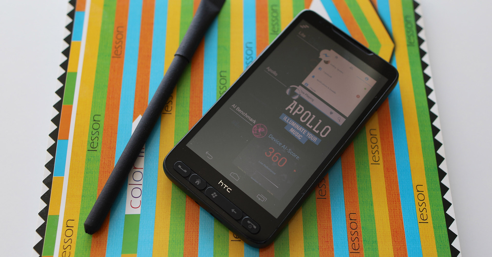
HTC HD2: Testing AI Performance of a 10-year old Legend
HTC is going through a really tough time right now: no phone releases this year and a small assortment of devices from 2018. But 10 years ago everything was quite different - being one of the most powerful and innovative companies of its time, it was defining the trends and standards of mobile industry. In 2009, it revealed several milestone smartphones such as HTC Magic, Hero, Touch2, Diamond2, and of course, one of the greatest hit ever produced by HTC - HD2 (Leo), the pinnacle of Windows Mobile devices. With the first Qualcomm Snapdragon chipset, 576 MB of RAM, stylish design and huge display (4.3 inches was quite a challenge in 2009), it was a cherished dream of many geeks at the end of 00's. The beginning of its commercial life wasn't too fortunate though - just after a couple of months after its release, HTC announced the deprecation of Windows Mobile devices and completely switched to Android and WP7, leaving all existing owners of this mighty phone without any updates. But what first seemed like the end of Leo's life, was actually just its beginning: as its hardware was almost identical to later HTC devices running Android, its faithful developer community has soon ported Android 1.6-2.3 on HD2 that was running perfectly on its hardware. And then... Windows Phone 7 and 8, Windows RT, Ubuntu and Ubuntu Phone, MeeGo and Firefox OS - all these operating systems got a chance to run on our hero. There were even some attempts to port iOS (!) on HD2, though the source code of this project has never been published.
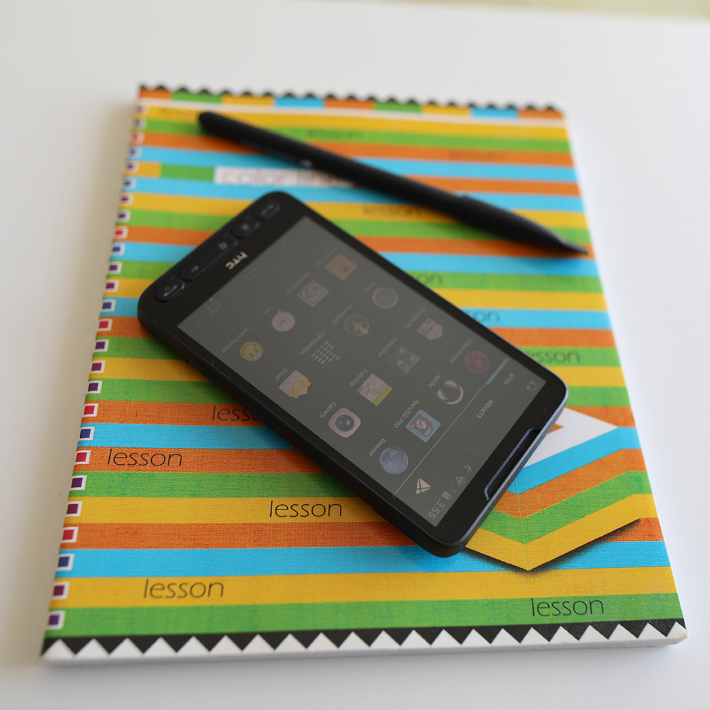
The time was passing by, many Android flagship phones were forgotten, but Leo just refused to die - it was getting numerous Android ports from the community: Android 4.0-4.4, Android 5, Android 6, Android 7.1... Even now, 10 years after its release, it is still possible to use it on a regular basis as a second phone with Android 4.1 - it's running surprisingly good considering its prehistoric hardware. So, as it still seems to be alive, let's then test the last trend of these years - AI, on this immortal dinosaur: will it be able to run all those Neural Networks mentioned in nearly every smartphone presentation in 2019?
What is AI? To clarify this from the beginning: "smartphone's AI" is nothing more than software programs running on mobile devices. Though AI applications are different from standard programs in the way they are trained to perform their task, from a technical perspective, their work consists in performing multiplications and summations of numerous numbers and matrices, and thus they can run on nearly any hardware including smartphones' CPUs. The only problem is that this is usually too slow - AI algorithms often require enormous computational resources, and to speed up these computations SoC vendors are trying to accelerate them with AI chips, DSPs or GPUs - the same as with games or videos. Our HTC is definitely lacking any dedicated hardware for this task, and its CPU is also not a new one. But let's see if it can still cope with all this AI magic.
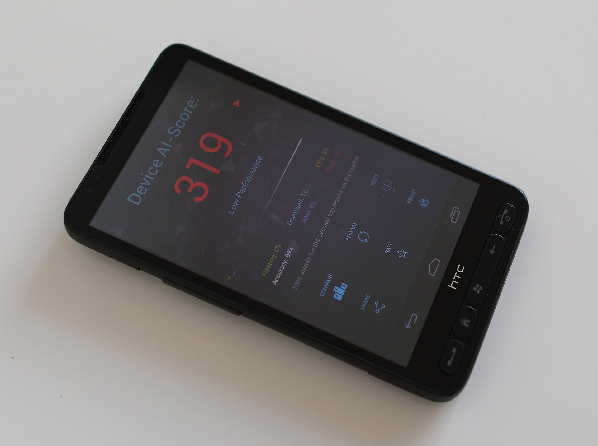
To check its AI performance, we will run 11 tests from AI Benchmark that include several image classification, face recognition and photo processing tasks. The first surprise - HTC was able to successfully complete all of them! In low resolution, painfully and slowly, but after 8 minutes we saw the final result... 319 points! While we initially expected that all those tasks would be useless for HD2, it turned out that we were absolutely wrong.
In the first test ("The Life"), it was able to correctly classify images with MobileNet-V2 CNN under 1 and 0.5 seconds (for float and quantized modes, respectively), meaning that this functionality wouldn't be a burden for HD2 if used in real applications. Performing the same classification task with larger Inception-V3 model (test "Zoo") was much longer - around 10 seconds, though this is still okay if there is no need for realtime performance. And with face recognition task it managed to deal in 8 seconds - well, you can make yourself a cup of tea while Leo is recognizing you :)
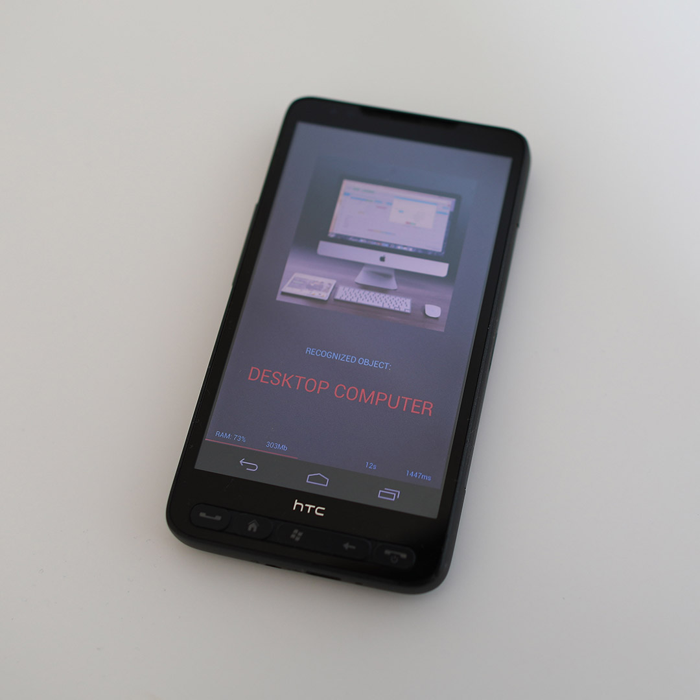
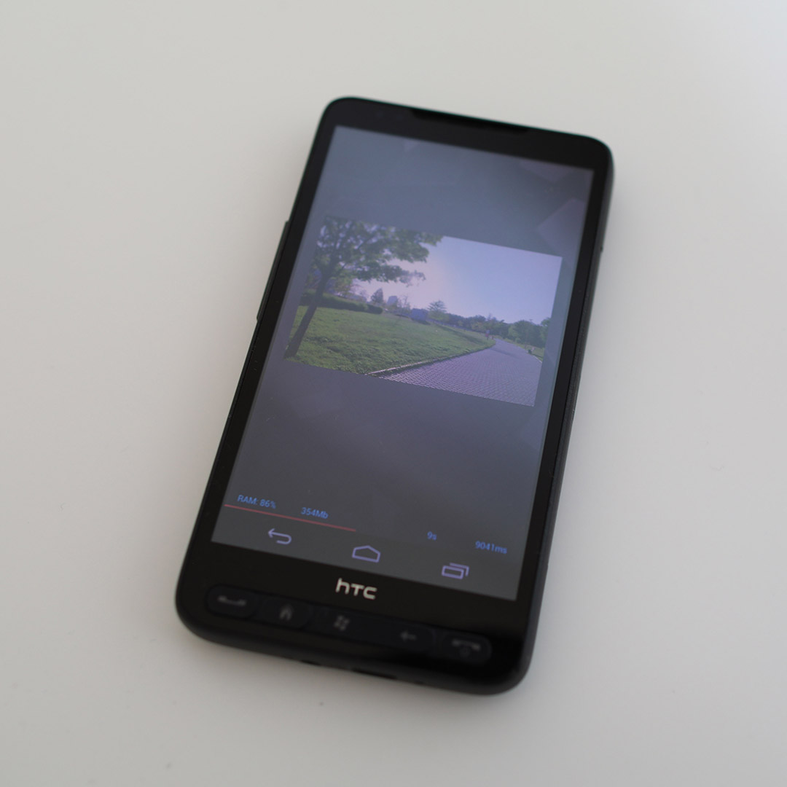
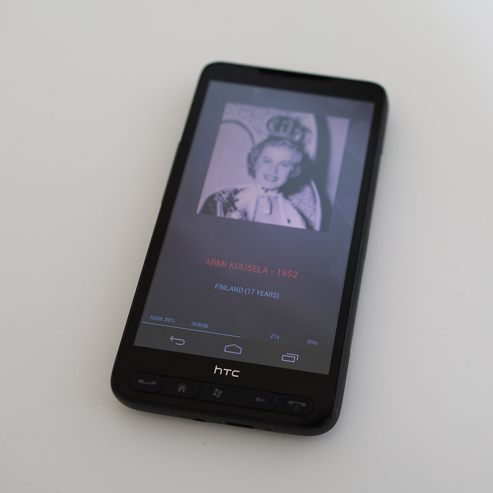
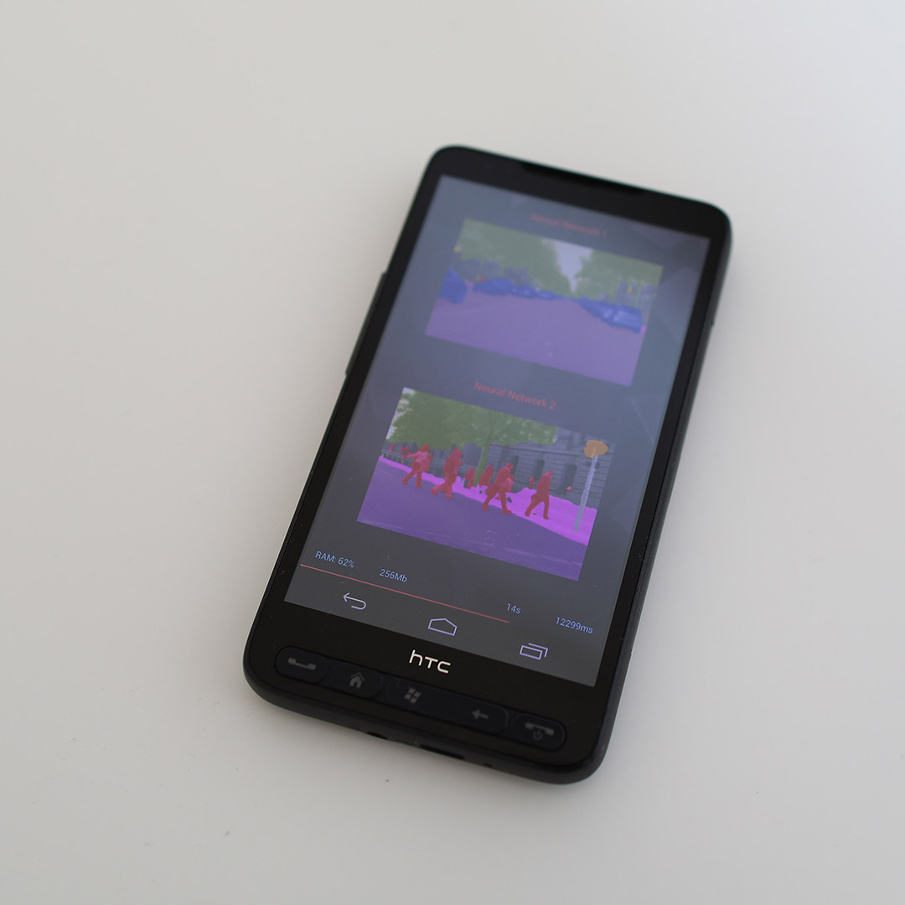
Though HD2 has also passed all image precessing tests, there is little practical value in them on Leo: with 576 MB of RAM (out of which around ~200 MB are free), it can process only tiny pictures and photos. The only two tasks that it can perform in acceptable resolution are Semantic Image Segmentation and Super-Resolution problems, though its speed is not that high here: 12 and 24 seconds, respectively. Below you can find Leo's results in all tasks:
● Image Classification (224x224 px, float): 424ms
● Image Classification (224x224 px, int8): 985ms
● Image Classification (299x299 px): 11.3s
● Face Recognition (384x384 px): 7.8s
● Playing Atari Breakout (84x84 px): 617ms
● Image Deblurring (256x256 px): 3.7s
● Image Super-Resolution (192x192 px): 16.6s
● Bokeh Simulation / Portrait Mode (96x144 px): 12.2s
● Semantic Segmentation (384x576 px): 12.1s
● Image Enhancement (64x64 px): 4.9s
One thing that impressed us: the first Snapdragon chipset (QSD8250) designed in 2007 already supported dedicated instruction sets for accelerating integer computations - it is capable of running int AI models almost 2 times faster than the float ones. Right now many SoC manufacturers are trying to present this as a new and unique AI feature, while 12 years ago, when there was no AI hype, Qualcomm's engineers were just doing their job, and as we can see - were doing it awesomely.
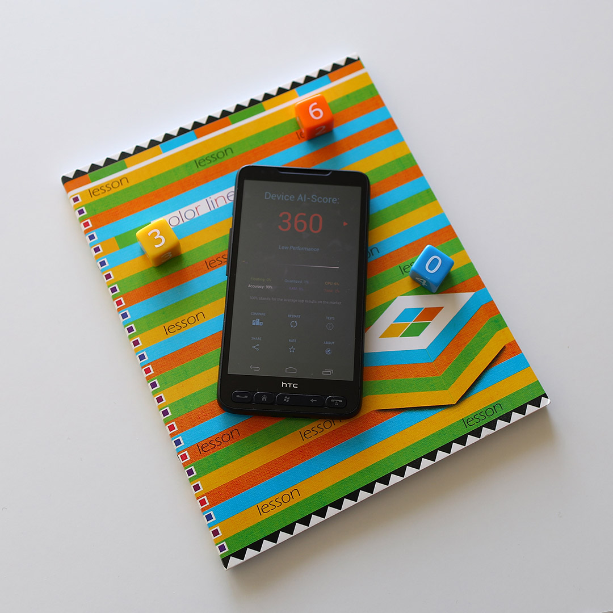
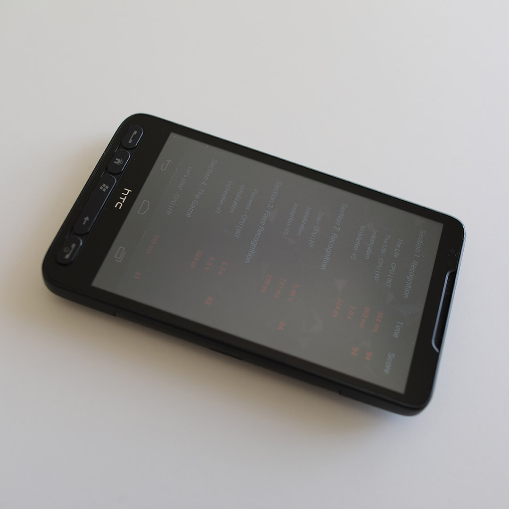
Overclocking. 319 points are good, but Leo is capable of more than that! 1GHz and default CPU scheduler are definitely limiting its capabilities, so let's overclock our monster to 1.2GHz and test it again in Performance Mode. Another 8 minutes passed and we see... 360 points. Though it is possible to go further and overclock it up to 1.5GHz (that should result in 400+ points), we will not do this - Leo is proud enough not to seek the highest scores in the benchmarks. By the way, if you have Leo in your collection and want to run the latest apps on it or reproduce our results, we strongly recommend you installing PACman All in 1 ROM: it's very light (less than 100 MB), fast and stable, all modern messengers are working pretty fine with it. And don't forget to patch and replace default Google Play Services - Leo will function much better with their lighter alternatives like microG.
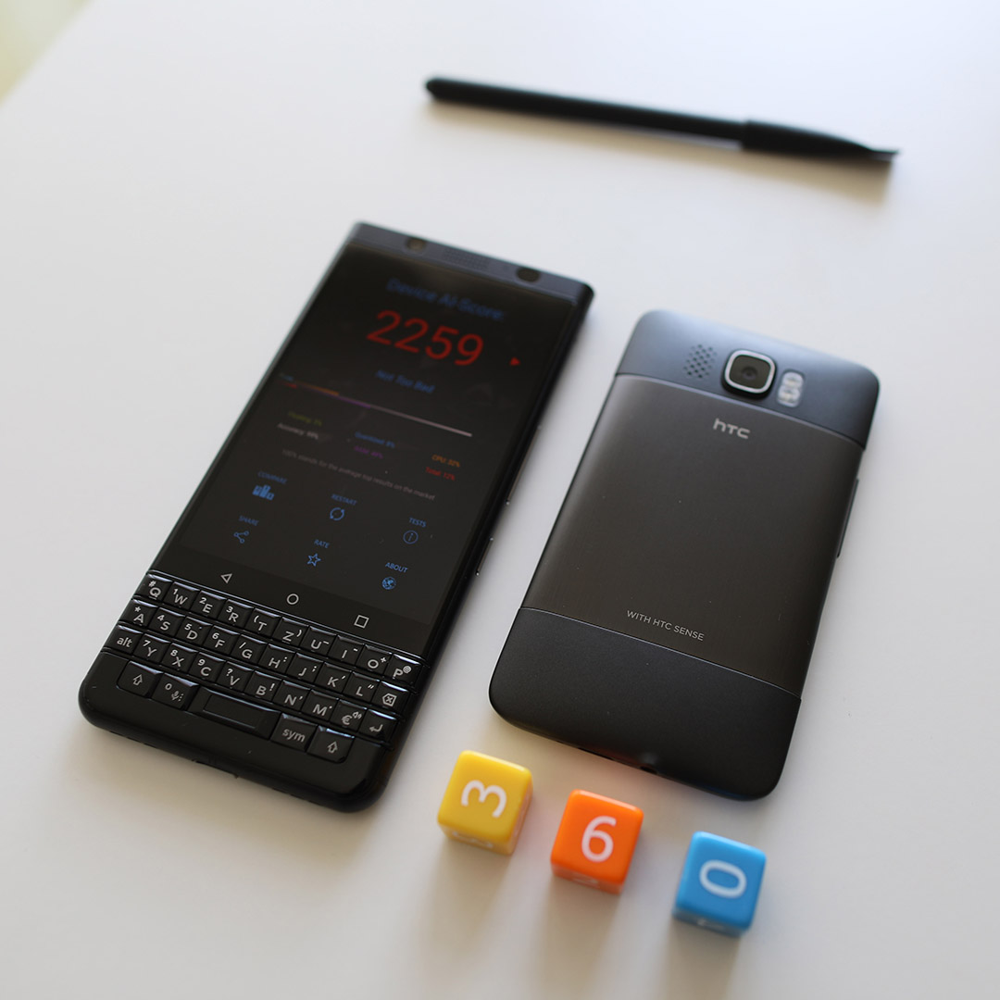
A few words about using HTC HD2 in 2019. How it feels now? It feels... awesome. Really. Yes, it's speed is far away from modern flagship devices, it cannot take 48MP photos and is not supporting the latest animojis, but it has something that the current devices lost far in the past: a feel of geeky and mighty device designed for serving you (not opposite), a device that will go with you through any apocalypse. And it is definitely charming - after Leo, almost all modern phones feel like soulless bricks created by marketers, not engineers - without real breakthroughs and advantages, just clumsy imitations of each other. HTC, maybe it's time to wake up, take your courage and create another HD2 that will change this situation?
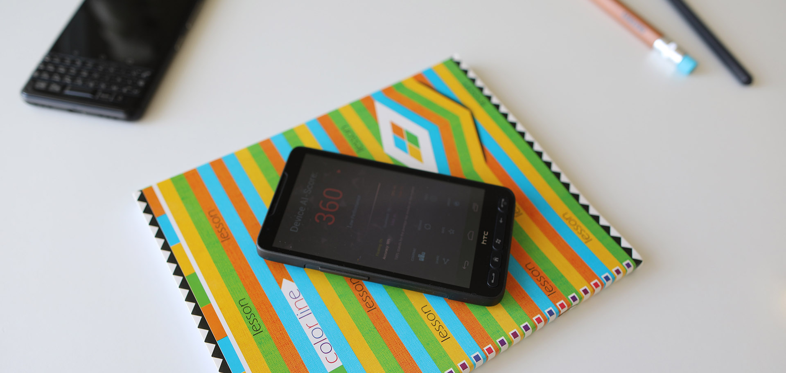
P.S. According to our knowledge, this is the oldest phone that can run AI Benchmark (and other current benchmarks): other Windows Mobile devices never got Android 4.0+ ports, and earlier Android phones had much weaker hardware (256-384 MB of RAM and Qualcomm MSM7xxx chipsets). If you know any exceptions - please let us know, we will update this information.
01 April 2019 Andrey Ignatov | AI Benchmark


{kind=link}
{kind=link}
{kind=link}
{kind=link}
{kind=link}
{kind=link}
{kind=link}
{kind=link}
{kind=link}
{kind=link}
{kind=link}
{kind=link}